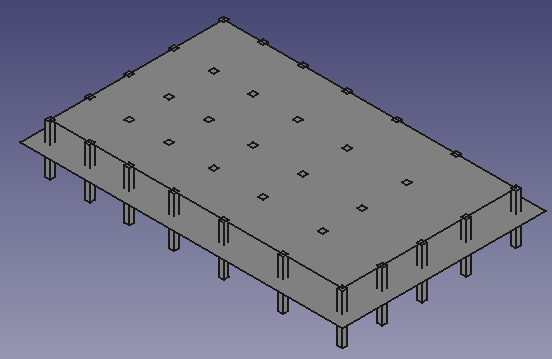

Documentation of building.py:¶
Welcome to the Documentation of building.py
First We have imported some of the libraries-
from config import *
import string
import FreeCAD, Part, PartGui
from FreeCAD import Base
ac_doc = FreeCAD.ActiveDocument
Let’s first declare some of the variables, which we’ll be using through out the program-
dis_span_len is a list containing length of “spans” length wise, generated by the function span_process having argument rep_span_len from file config.py
dis_span_len = span_process(rep_span_len)
dis_span_wid is a list containing length of “spans” width wise, generated by the function span_process having argument rep_span_wid from file config.py
dis_span_wid = span_process(rep_span_wid)
no_spans_len contains number of spans building’s length wise.
no_spans_len = len(dis_span_len)
no_span_wid contains number of spans building’s width wise.
no_span_wid = len(dis_span_wid)
Let’s declare some of the variables, which will hold values such as i holds the count of no. of columns, j holds the count of no. of beams, k holds count of slabs, nodes is a list which holds the list of co-ordinates, and z is initialized to zero which is in such a way that the construction under the plinth level could be done (i.e for a zero storey building).
i = 0
j = 0
k = 0
nodes = []
z = 0
This plane function Draws ground plane to depict the ground level:
plane([-3, -3, plinth_lev - 2 * plinth_lev], x_sum(no_spans_len) + 6, y_sum(no_span_wid) + 6)
This time the plane function draws plinth plane to depict plinth level:
plane([0, 0, 0], x_sum(no_spans_len), y_sum(no_span_wid))
Now, here is the loop of loops, where first loop of z tells about the no. of slabs to be made (i.e is the no. of stories) where for each loop in z, x initiates from x = 0 to x = no_spans_len which generates the beams length wise and for each loop in x, y ranges from y = 0 to y = no_span_wid which generates the beams widthwise.
while z <= stories:
x = 0
while x <= no_spans_len:
y = 0
while y <= no_span_wid:
coords keep hold of the coordinates and this is appended to a list of nodes.
coords = [x_sum(x), y_sum(y), z_sum(z)]
nodes.append(coords)
If building is 0 storey, height will be equal to ground level. Only the structure upto the plinth level will be generated.
if z == 0:
col_name stores the name of the column which is currently in use.
col_name = "Column" + str(i)
i = i + 1
If column is rectangular (i.e col_type = 1), then make_box() function will generate rectangular columns having coordinates as inside the function.
if col_type == 1:
make_box(col_name, len_col, wid_col, dep_of_foun + plinth_lev, [coords[0] - len_col / 2.0, coords[1] - wid_col / 2.0, dep_of_foun + plinth_lev - 2 * (dep_of_foun + plinth_lev)], [0.00, 0.00, 0.00, 1.00])
If column is cylinderical (i.e col_type is other than 1), then make_cylinder will generate cylindrical columns.
else:
make_cylinder(col_name, radius_col, dep_of_foun + plinth_lev, [coords[0], coords[1], dep_of_foun + plinth_lev - 2 * (dep_of_foun + plinth_lev)], [0.00, 0.00, 0.00, 1.00])

When z is not equal to 0, i.e it is now not the 0 storey but more than that, then this will generate columns using the below configuration.
else:
col_name = "Column" + str(i)
i = i + 1
if col_type == 1:
make_box(col_name, len_col, wid_col, z_sum(z) - z_sum(z-1), [coords[0] - len_col/2.0, coords[1] - wid_col/2.0, z_sum(z-1)], [0.00, 0.00, 0.00, 1.00])
else:
make_cylinder(col_name, radius_col, z_sum(z) - z_sum(z-1), [coords[0], coords[1], z_sum(z-1)], [0.00, 0.00, 0.00, 1.00])
This block of code creates beams width wise, considering the condition that it is not the zero storey building (i.e z != 0) and not the first column of that storey:
if y != 0 and z != 0:
beam_name = "Beam" + str(j)
j = j + 1
make_box(beam_name, wid_beam, y_sum(y) - y_sum(y - 1), dep_beam, [coords[0] - wid_beam / 2.0, y_sum(y - 1), z_sum(z) - dep_beam / 2.0], [0.00, 0.00, 0.00, 1.00])
This block of code creats beams length wise, considering the condition that it is not the zero storey building (i.e z != 0) and not the first row of columns:
if x != 0 and z != 0:
beam_name = "Beam" + str(j)
j = j + 1
make_box(beam_name, x_sum(x) - x_sum(x - 1), wid_beam, dep_beam, [x_sum(x - 1), coords[1] - wid_beam / 2.0, z_sum(z) - dep_beam / 2.0], [0.00, 0.00, 0.00, 1.00])
This block of code increments x & y for next span length and for next span width respectively.
y = y + 1
x = x + 1
If building has some height, i.e. “z != 0”, only then slab can come into existance.
if z != 0:
slab_name = "Slab" + str(k)
k = k + 1
make_box(slab_name, x_sum(no_spans_len), y_sum(no_span_wid), dep_slab, [0, 0, z_sum(z) + dep_beam / 2.0 - dep_slab], [0.00, 0.00, 0.00, 1.00])
z = z + 1
FreeCAD.Gui.SendMsgToActiveView("ViewFit")
FreeCAD.Gui.activeDocument().activeView().viewAxometric()